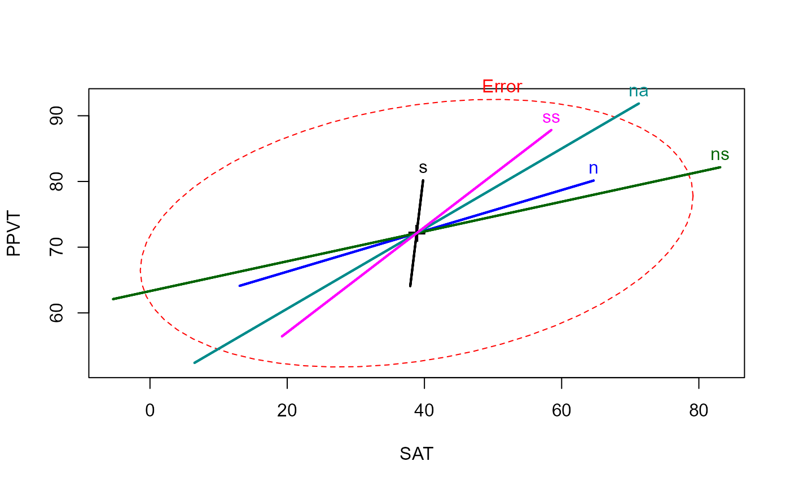
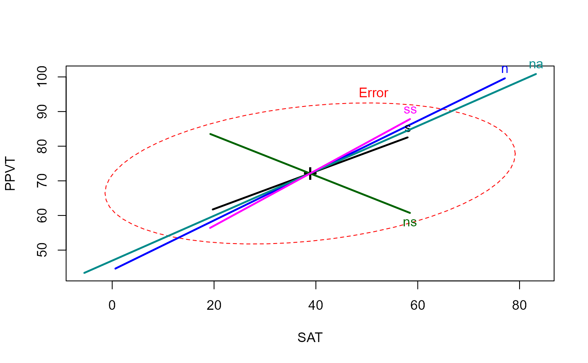

gsorth uses sequential, orthogonal projections, as in the
Gram-Schmidt method, to transform a matrix or numeric columns of a data
frame into an uncorrelated set, possibly retaining the same column means and
standard deviations as the original.
Arguments
- y
A numeric data frame or matrix
- order
An integer vector specifying the order of and/or a subset of the columns of
yto be orthogonalized. If missing,order=1:pwherep=ncol(y).- recenter
If
TRUE, the result has same column means as original; else means = 0 for cols2:p.- rescale
If
TRUE, the result has same column standard deviations as original; else sd = residual variance for cols2:p- adjnames
If
TRUE, the column names of the result are adjusted to the form Y1, Y2.1, Y3.12, by adding the suffixes '.1', '.12', etc. to the original column names.
Value
Returns a matrix or data frame with uncorrelated columns. Row and column names are copied to the result.
Details
In statistical applications, interpretation depends on the order of
the variables orthogonalized. In multivariate linear models, orthogonalizing
the response, Y variables provides the equivalent of step-down tests, where
Y1 is tested alone, and then Y2.1, Y3.12, etc. can be tested to determine
their additional contributions over the previous response variables.
Similarly, orthogonalizing the model X variables provides the equivalent of
Type I tests, such as provided by anova.
The method is equivalent to setting each of columns 2:p to the
residuals from a linear regression of that column on all prior columns,
i.e.,
z[,j] <- resid( lm( z[,j] ~ as.matrix(z[,1:(j-1)]), data=z) )
However, for accuracy and speed the transformation is carried out using the QR decomposition.
See also
qr,
Examples
GSiris <- gsorth(iris[,1:4])
GSiris <- gsorth(iris, order=1:4) # same, using order
str(GSiris)
#> num [1:150, 1:4] 5.1 4.9 4.7 4.6 5 5.4 4.6 5 4.4 4.9 ...
#> - attr(*, "dimnames")=List of 2
#> ..$ : chr [1:150] "1" "2" "3" "4" ...
#> ..$ : chr [1:4] "Sepal.Length" "Sepal.Width.1" "Petal.Length.12" "Petal.Width.123"
zapsmall(cor(GSiris))
#> Sepal.Length Sepal.Width.1 Petal.Length.12 Petal.Width.123
#> Sepal.Length 1 0 0 0
#> Sepal.Width.1 0 1 0 0
#> Petal.Length.12 0 0 1 0
#> Petal.Width.123 0 0 0 1
colMeans(GSiris)
#> Sepal.Length Sepal.Width.1 Petal.Length.12 Petal.Width.123
#> 5.843333 3.057333 3.758000 1.199333
# sd(GSiris) -- sd(<matrix>) now deprecated
apply(GSiris, 2, sd)
#> Sepal.Length Sepal.Width.1 Petal.Length.12 Petal.Width.123
#> 0.8280661 0.4358663 1.7652982 0.7622377
# orthogonalize Y side
GSiris <- data.frame(gsorth(iris[,1:4]), Species=iris$Species)
iris.mod1 <- lm(as.matrix(GSiris[,1:4]) ~ Species, data=GSiris)
car::Anova(iris.mod1)
#>
#> Type II MANOVA Tests: Pillai test statistic
#> Df test stat approx F num Df den Df Pr(>F)
#> Species 2 1.1919 53.466 8 290 < 2.2e-16 ***
#> ---
#> Signif. codes: 0 '***' 0.001 '**' 0.01 '*' 0.05 '.' 0.1 ' ' 1
# orthogonalize X side
rohwer.mod <- lm(cbind(SAT, PPVT, Raven) ~ n + s + ns + na + ss, data=Rohwer)
car::Anova(rohwer.mod)
#>
#> Type II MANOVA Tests: Pillai test statistic
#> Df test stat approx F num Df den Df Pr(>F)
#> n 1 0.059964 1.2970 3 61 0.283582
#> s 1 0.097788 2.2039 3 61 0.096703 .
#> ns 1 0.208820 5.3667 3 61 0.002406 **
#> na 1 0.183478 4.5690 3 61 0.005952 **
#> ss 1 0.091796 2.0552 3 61 0.115521
#> ---
#> Signif. codes: 0 '***' 0.001 '**' 0.01 '*' 0.05 '.' 0.1 ' ' 1
# type I tests for Rohwer data
Rohwer.orth <- cbind(Rohwer[,1:5], gsorth(Rohwer[, c("n", "s", "ns", "na", "ss")], adjnames=FALSE))
rohwer.mod1 <- lm(cbind(SAT, PPVT, Raven) ~ n + s + ns + na + ss, data=Rohwer.orth)
car::Anova(rohwer.mod1)
#>
#> Type II MANOVA Tests: Pillai test statistic
#> Df test stat approx F num Df den Df Pr(>F)
#> n 1 0.227735 5.9962 3 61 0.001195 **
#> s 1 0.088967 1.9857 3 61 0.125530
#> ns 1 0.112979 2.5898 3 61 0.060939 .
#> na 1 0.302957 8.8375 3 61 5.958e-05 ***
#> ss 1 0.091796 2.0552 3 61 0.115521
#> ---
#> Signif. codes: 0 '***' 0.001 '**' 0.01 '*' 0.05 '.' 0.1 ' ' 1
# compare with anova()
anova(rohwer.mod1)
#> Analysis of Variance Table
#>
#> Df Pillai approx F num Df den Df Pr(>F)
#> (Intercept) 1 0.97665 850.63 3 61 < 2.2e-16 ***
#> n 1 0.22774 6.00 3 61 0.001195 **
#> s 1 0.08897 1.99 3 61 0.125530
#> ns 1 0.11298 2.59 3 61 0.060939 .
#> na 1 0.30296 8.84 3 61 5.958e-05 ***
#> ss 1 0.09180 2.06 3 61 0.115521
#> Residuals 63
#> ---
#> Signif. codes: 0 '***' 0.001 '**' 0.01 '*' 0.05 '.' 0.1 ' ' 1
# compare heplots for original Xs and orthogonalized, Type I
heplot(rohwer.mod)

heplot(rohwer.mod1)
